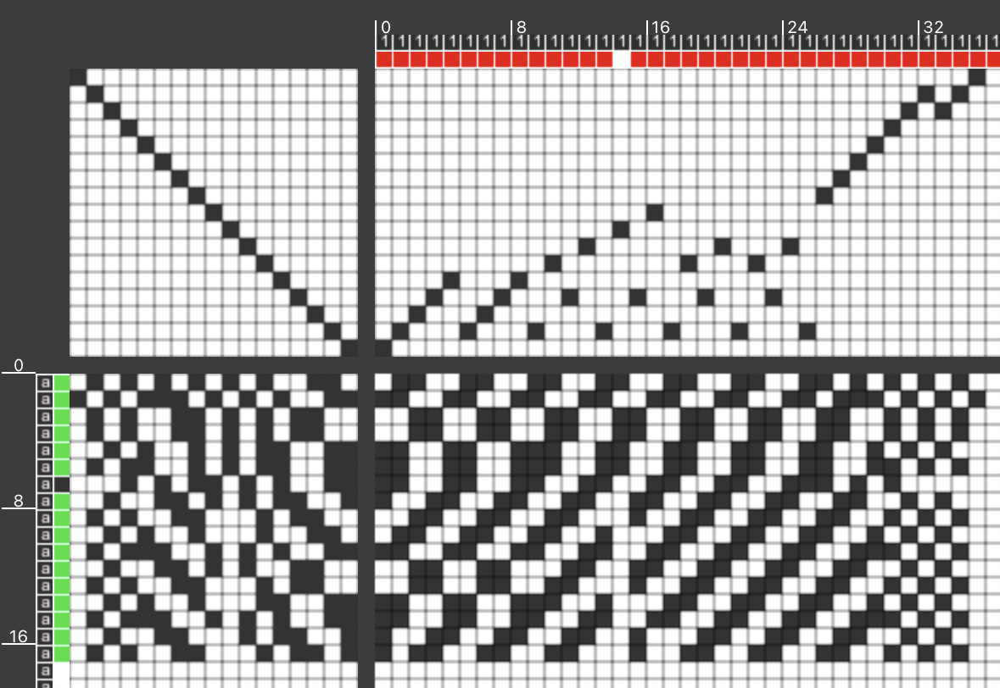

Drawdown - We started by picking swatches in class, and I decided on a swatch with contrasting colors so I could easily see the differences between the warp and weft. After photographing the swatch, picking off a few adjacent sides, and orienting the swatch, I moved the green weft pics with a pin. I was doing well until the eighth row when I accidentally pulled out one of the warp ends with a weft pic. This is noted in my worksheet, but using ADACAD, I did 'predict' how the draft would've looked like with the warp end. As I got to the last four rows of weft pics, the weave was quite loose, and I was worried about the final row falling out, so I drafted all four rows together without removing the weft pics. It was a bit complicated but using my pin to hold my place helped immensely.
Lift Plan - Color Chart -